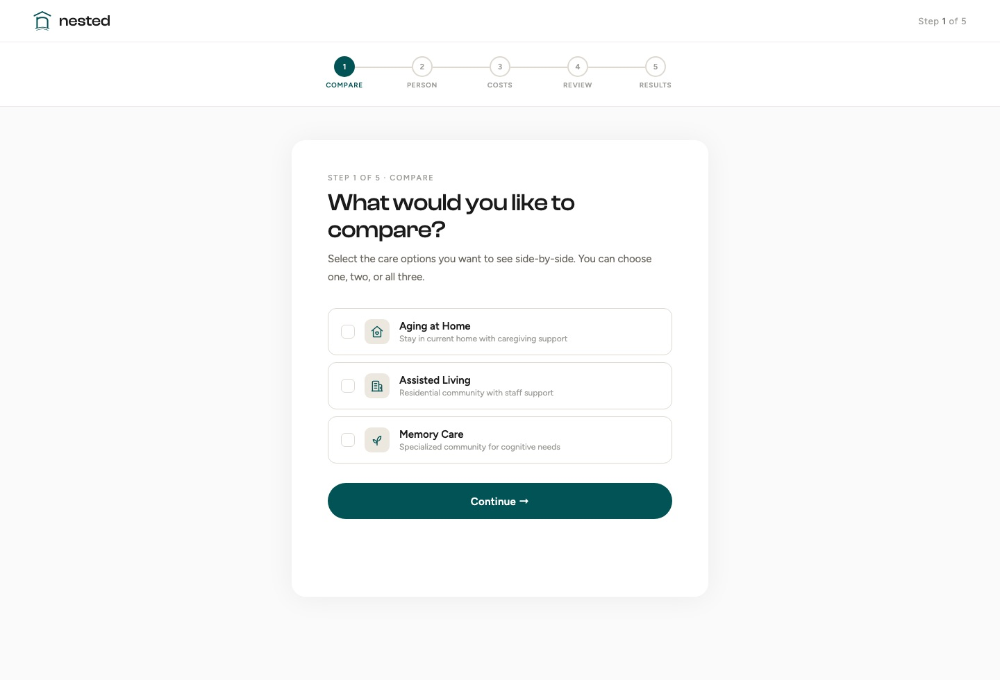

Nested
A cost calculator that tells families what senior care actually costs, in three minutes, with no phone call, no account, and no referral fee.
About Nested
Nested is a cost comparison tool for families choosing between in-home care, assisted living, and memory care. I was the solo designer and developer: brand, marketing site, a seventeen-screen calculator, the design system, and the accessibility model.
Unlike most of the category, it takes no commission from the facilities it compares, which shaped the product more than any visual decision did.
Nobody will give you a number
Costs are quoted only after a phone call. Comparisons are near impossible. And most sites that do publish figures are referral businesses paid by the facilities they recommend, so the advice arrives with a commercial interest attached that families can’t see.
The result is that people commit to one of the largest recurring expenses of their lives, often in a hurry, after a fall or a diagnosis, without ever seeing the realistic options side by side. The decision is urgent and emotional, and the information is at its most opaque exactly when clarity matters most.
Where families get stuck
Two groups, weighted differently. Adult children in their forties and fifties researching care for a parent, usually under time pressure and doing it for the first time. And older adults planning for themselves. That second group sets the bar for every interface decision, because this is an audience the web routinely designs past.
I looked at where families already go, and what each one withholds.
Free because facilities pay for placement. The recommendation carries an interest the family can’t see, and pricing usually arrives only after a sales call.
Credible national and state medians, published as reports. They say what care costs in general, not what your situation costs, and they don’t weigh paths against each other.
Accurate for one facility on one path. Comparing three options means three conversations, three formats, and no like-for-like total at the end.
How might we give families an honest, comparable cost picture for every care path, in minutes, without asking them to hand over their details?
Finding the shape
Two things had to be true at once. The tool needed enough detail to produce a number a family would trust, and it had to be finishable in one sitting by someone stressed and not enjoying the task.
That ruled out both ends. A single-field estimator is too crude to believe; a full financial-planning form is too heavy to complete. The resolution was a branching flow: choose the paths you’re weighing, answer only the questions that path needs, and fill anything unknown with national averages you can edit field by field.
Taking them would have funded the product and destroyed the reason to use it. Stated on the homepage, not buried in a policy page.
Results appear immediately. Sharing happens by download or email afterwards, never as a gate in front of the answer.
Nested compares paths and stops. It doesn’t tell a family which to choose, because it isn’t in a position to know.
Refining the build
The final phase was about making the product hold up for the people who’d actually use it.
An accessibility panel sits in the navigation: text size in four steps, higher contrast, reduced motion, underlined links. Choices persist per device and apply before first paint, so a saved preference never flashes on load.
Page zoom was the obvious way to scale text and the wrong one. It inflates a 72px display heading until it overflows, while the body copy that needs help only grows in proportion. Reading sizes now scale up to 50%; display type barely moves.
A terracotta accent ran alongside the teal, so every new component became a decision about which to use, and the answer was rarely meaningful. One hue made the rule trivial.
A serif italic for emphasis words split headings into two typefaces for no gain in meaning. Removing it also fixed a bug where that line fell back to a system font.
Emoji render differently on every platform and can’t take a colour from the palette. Replaced with a line set on a 24px grid, one stroke weight, inheriting the text colour.
Each word is a separate element so it can animate in, and JSX strips whitespace spanning a line break, so the words ran together. The same bug was sitting in a second heading.
The CSS matched the design file exactly; the build was deleting it. The minifier collapsed two backdrop-filter declarations into the prefixed one alone, which Chrome and Firefox ignore.
The intro overlay is removed by script on a timer, and browsers throttle timers in background tabs, so a page opened in an unfocused tab could sit behind it indefinitely. It now waits for the tab to be visible, with a CSS fallback if the script never runs.
How Nested works
A three-step walkthrough on the homepage shows exactly what the tool will ask and what it returns, so starting the calculator is never a leap of faith.
Seventeen screens across three care paths, each split into housing, care level, and extras. Don’t know a figure? Fill with national averages and edit any field.
Monthly cost per path, a five-year projection, and the break-even point, as a printable report to share with family or a financial advisor.

What I’d take forward
Trust is built by what you refuse to do.
The strongest decisions here were subtractions: no referral fees, no account, no email gate on the result. Each cost a conventional growth lever and bought the only thing that matters in this category: a reason to believe the number.
Accessibility is an architecture decision, not a checklist.
The panel was the easy part. The real work was that every reveal on the page starts hidden and is switched on by script, so reducing motion has to show that content rather than just stop the animation. Accommodations have to be designed into how the page is built.
Building it myself changed what I designed.
Several problems were invisible in Figma and obvious in the browser: a heading that lost its typeface, a nav effect the build was silently stripping, a loading screen that could trap the whole site. Shipping the code is what caught the gap between the design and what people actually get.